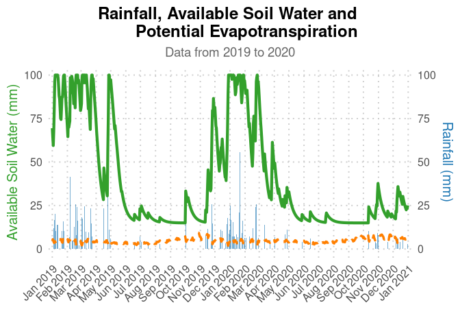

The goal of AquaBEHER is to computes and integrates daily reference evapotranspiration (Eto) into FAO56 water balance model. The AquaBEHER package can estimate daily parameters of crop and soil water balances parameters for agricultural crops. The package can also estimate rainy season calandar (Onset, Cessation and Duration) based on agroclimatic approach.
Specifically, the package can perform the following functions:
- Estimation of daily evapotranspiration
- Estimation of daily soil water balance
- Estimation of rainy season calandar:
- Onset of the rainy season
- Cessation of the rainy season
- Duration of the rainy season
Installation
You can install the development version of AquaBEHER from GitHub with:
# install.packages("devtools")
devtools::install_github("RobelTakele/AquaBEHER")Example
This is a basic example which shows you how to estimate daily water balance:
What is special about using README.Rmd instead of just README.md? You can include R chunks like so:
data(AgroClimateData)
head(AgroClimateData)
#> GridID Lat Lon Elev WHC Year Month Day Rain
#> 1 MOZ0007149 -15.09238 39.2519 392.1337 97.84914 1982 1 1 0.000000
#> 2 MOZ0007149 -15.09238 39.2519 392.1337 97.84914 1982 1 2 0.000000
#> 3 MOZ0007149 -15.09238 39.2519 392.1337 97.84914 1982 1 3 0.000000
#> 4 MOZ0007149 -15.09238 39.2519 392.1337 97.84914 1982 1 4 1.907393
#> 5 MOZ0007149 -15.09238 39.2519 392.1337 97.84914 1982 1 5 0.000000
#> 6 MOZ0007149 -15.09238 39.2519 392.1337 97.84914 1982 1 6 0.000000
#> Tmax Tmin Rs Tdew Uz
#> 1 32.24396 23.11500 23.86698 20.21160 4.723783
#> 2 33.07202 23.12585 26.38375 20.48284 4.279407
#> 3 33.49679 23.12602 25.00704 20.45689 3.622179
#> 4 32.76818 23.60351 24.16475 20.83896 2.535047
#> 5 32.65872 22.79294 23.44483 21.36882 1.477617
#> 6 31.80630 22.43975 21.99277 21.29297 1.953415
Eto.daily <- calcEto(AgroClimateData, method = "PM", Zh = 10)
AgroClimateData$Eto <- Eto.daily$ET.Daily
soilWHC = 100
watBal <- calcWatBal(AgroClimateData, soilWHC)The output of daily soil water balance can be ploted:
watBal <- watBal[watBal$Year %in% c(2010, 2020),]
date.vec <- as.Date.character(paste0(watBal$Year, "-", watBal$Month, "-", watBal$Day))
plot(watBal$AVAIL, ty="l", xlab="Days since 2010", ylab="Water (mm)", col="black", lwd = 1, lty = 2)
lines(watBal$Eto, col="red", lwd = 3)
lines(watBal$Rain, col="blue", lwd = 1)
legend("bottom",c("Rain","Eto","Available Moisture"),
horiz=TRUE, bty='n', cex=1,lty=c(1,1,2),lwd=c(2,2,2), inset=c(1,1),
xpd=TRUE, col=c("blue","red","black"))

The Center of Plant Sciences Group is a geographically and culturally diverse research team working on climate and crop genetics at Scuola Superiore Sant’Anna, Pisa, Italy.
You can contact us sending an email to Matteo Dell’Acqua (mailto:m.dellacqua@santannapisa.it) or Mario Enrico Pè (mailto:m.pe@santannapisa.it). You can also visit the crop genetics (http://www.capitalisegenetics.santannapisa.it/) web page.
We are committed to the free software and FAIR principles. This set of repositories collects our latest developments and provide reusable code.